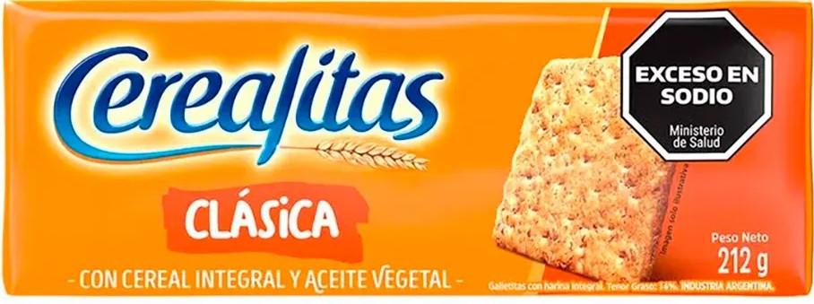

Las Cerealitas son galletitas saladas clásicas, súper crujientes y livianas, elaboradas a base de una mezcla de cereales integrales y semillas (como lino, sésamo o girasol). Tienen un sabor suave y tostado, ideal para quienes buscan una opción rica y más saludable para acompañar el mate, el desayuno o untar con queso crema en la merienda.